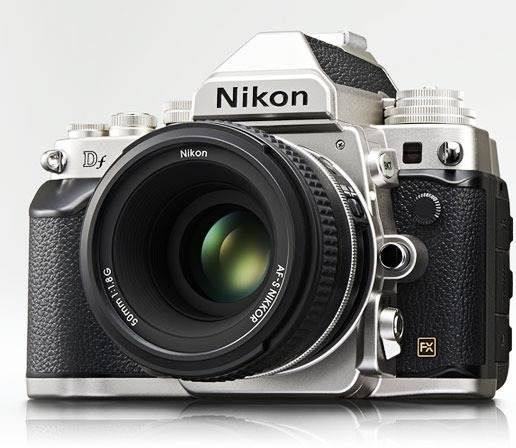

Its all about the light!
As a beginner photographer in my mid teens, I became involved with my high school's yearbook. My early work was primarily black & white film, which I processed in a darkroom. As my passion evolved, and given my outdoor interests, I was drawn to landscapes; Ansel Adam's work in particular. Continuing into the digital age, my work expanded beyond landscapes. As digital technology progressed, and to the present, I enjoy all types of subject matters, and especially portriture.
Based in Frederick, Maryland, I am available for assignments & print commissions.